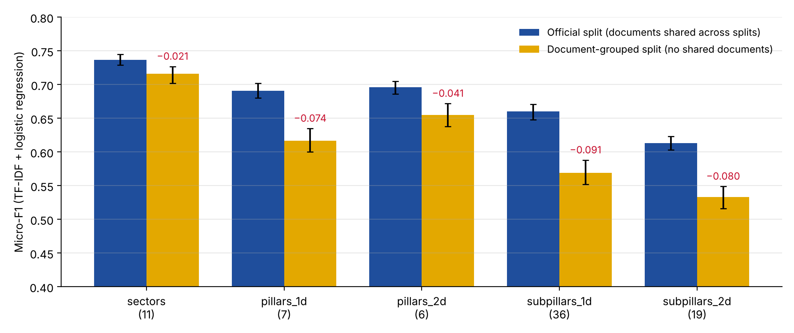

Data audit · Humanitarian NLP · Multilingual text classification
HumSet's official split shares 97% of test documents with training, and scores drop by up to 9 points without it
An audit of HumSet, a multilingual benchmark for classifying humanitarian report excerpts: how independent are its splits, and what happens to scores when they are made independent?
By Muzammal Hussain · 25 November 2026 · Research update
Humanitarian analysts read thousands of reports to decide which sectors and needs a crisis affects, and HumSet is the main public benchmark for automating that classification. Before training neural models on it for CrisisLens, we checked how independent its training, validation and test splits really are.
Key findings
- The splits share documents. 96.9% of test excerpts come from a document that also has excerpts in training.
- Scores drop on a clean split. On a document-grouped split, micro-F1 falls by 0.02 (sectors) to 0.09 (sub-pillars).
- Spanish is hardest on every task, although it has more training data than French.
- Labels are noisy. 774 duplicate texts carry different sector labels.
What we did
HumSet is a public collection of 154,104 excerpts from humanitarian reports, annotated by experts with the DEEP analytical framework in five multi-label tasks, from 11 sectors to 36 fine-grained sub-pillars. We downloaded version 2.0.0 at run time with a manifest of file hashes and audited it: duplicates, label conflicts and, above all, whether excerpts from the same source document appear in more than one split. We then trained a transparent baseline (TF-IDF word and character n-grams with one-vs-rest logistic regression, per-label thresholds chosen on validation) on the official split and on a document-grouped re-split in which no document appears in two splits, with 95% intervals from resampling whole documents.

Results
97.1% of validation excerpts and 96.9% of test excerpts come from a document that also has excerpts in training, although identical excerpt text is rare (2.7% and 2.9%). The official split is therefore an excerpt-level split: a model can learn a document's vocabulary and topics from its training excerpts and meet the same document again at test time. Moving to the document-grouped split lowers micro-F1 on every task, by 0.021 on sectors and by 0.074 to 0.091 on the pillar and sub-pillar tasks. Spanish is the hardest language on every task on the grouped split, although it has more training excerpts (27,810) than French (24,990). The data also hold 774 duplicate texts with different sector labels, a floor on the label noise any model faces.
What this means
Scores on HumSet's official split describe how a model does on new excerpts from documents it has already seen, not on a new report, which is the situation in humanitarian work. Results should also be reported on a document-grouped split. The next step is to train multilingual encoders (XLM-R) on both splits and see how much of the gap they close.
Limitations
One baseline model family so far; neural results follow in v0.2. Document identity comes from the dataset's lead identifiers. This is research software, not a tool for operational humanitarian decisions.
Software: Hussain, M. (2026). CrisisLens-AgentBench v0.1.2. Zenodo. doi:10.5281/zenodo.24429735. Data: HumSet (Fekih et al., Findings of EMNLP 2022).